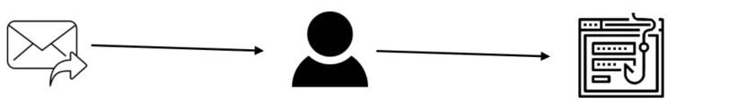
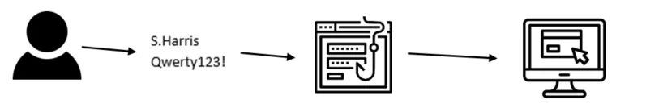
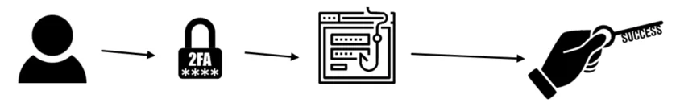

With digital transactions becoming common and cyberattacks rising, the importance of strong authentication methods has never been greater. One widely used two-factor authentication method is SMS One-Time Password (OTP).
What is SMS OTP?
SMS OTP sends a unique alphanumeric or numeric code to a mobile number for two-factor authentication. Recipients use this code when logging into a service, website, or app. However, this method has vulnerabilities. In this blog, we'll explain why SMS OTP verification is not secure and show in detail one of the attacks that might happen when using SMS OTP.
Types of SMS OTP phishing attacks
A serious weakness of SMS OTP is its susceptibility to phishing attacks and social engineering tactics. Phishing tricks users into giving sensitive info by impersonating legit sources. Attackers can make fake sites or apps to steal credentials and OTPs. Social engineering, like impersonation, can also get users to share OTPs over the phone. Once attackers have OTPs, they can breach accounts and access sensitive data.
Here are 3 types of SMS OTP phishing attacks
Interception & SIM Swapping: SMS OTPs can be intercepted via SIM swapping or network vulnerabilities. Attackers gain control of victim numbers, intercept OTPs, and breach accounts.
Phishing & Social Engineering: SMS OTPs are susceptible to phishing attacks. Attackers trick users into revealing OTPs via fake sites or social engineering tactics, compromising accounts.
Device & Network Risks: Mobile device theft or network vulnerabilities expose OTPs. Even secure devices are vulnerable to network-based attacks, compromising authentication integrity.
SMS OTP phishing attack example
The attack starts out with an email sent to a user asking for credential reset or asking the user to log into their account to verify some activity. The link in the email will direct the user to a phishing site that is set up to resemble the actual legitimate site.

The user enters their credentials into the phishing site. The credentials are recorded by the hacker, and subsequently entered into the legitimate site by the hacker.

The legitimate site generates an SMS one-time password (OTP), and sends it to the user- usually in the form of a string of alphabetic characters or a six or eight-digit numeric code.
The user manually types in OTP into the phishing site, and the attacker types the OTP into the legitimate site, thereby gaining access.

The hacker has easily bypassed the additional protections of SMS in essentially the same manner the original username and password were compromised. They asked the user for their secrets. There are much more sophisticated variations of this attack, but because the hacker can simply ask the user for the information sophistication is not necessary.
How to protect against phishing attacks?
To prevent phishing attacks and protect users against phishing attacks, it’s crucial to fortify authentication process by enabling passwordless multi-factor authentication (MFA) like PasswordFree® by Identite. PasswordFree performs 3FA with two taps on a screen. Users can log in to accounts in under 5 seconds and be fully safeguarded against cyber attacks. Want to learn more about PasswordFree® MFA? Discover it here.
Besides, Identité® has an award-winning patented two-way authentication method Full Duplex Authentication® (FDA). FDA performs a unique highly secure authentication sequence whereby the server sends metadata to the user device, so the server can complete the validation of the authentication request.
However, the user’s private key is not yet invoked. The server validates itself to the user by sending both static and dynamic context necessary to prove its identity to the mobile application. Only then does the mobile application invoke the private key of the user to authenticate.